SENWEB
Anthony A. Fung (PhD), Fu Gao (PhD), Jungmin Nam, Fabio Parisi (PhD),
Negin Farzad, Archibald Enninful (PhD),
Ruth Montgomery (PhD), Yuval Kluger (PhD), Rong Fan (PhD)

SENWEB
local explorer
Documents
Hierarchy
Color by
Tissue
Cell type
Expand all
Reset view
drag to pan · scroll to zoom · click a node
◆ Ask the corpus